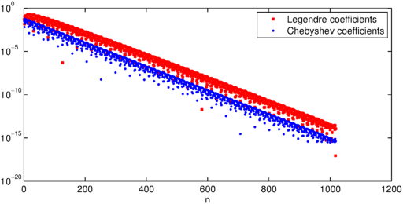
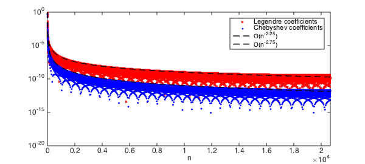
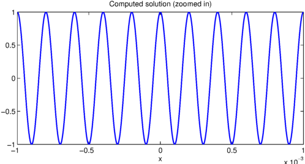

The Chebyshev-Legendre transform
Chebfun is based on Chebyshev interpolants and their related fast algorithms. Chebyshev interpolants are a very practical tool for computing with smooth functions. However, in some situations Legendre expansions, i.e.,
$$ p(x) = \sum_{n=0}^N c_n^{leg} P_n(x), $$
where $P_n(x)$ is the degree $n$ Legendre polynomial, are advantageous due to their orthogonality in the standard $L^2$ inner product. Recently, a new algorithm has been derived and implemented in Chebfun by Hale and Townsend that converts between $N$ Legendre and Chebyshev coefficients in $\mathcal{O}( N (\log N)^2/ \log \log N)$ operations [2]. The algorithm is based on a long-established asymptotic formula for Legendre polynomials [4], which was previously used in Chebfun's legpts command [1]. The transform comes in two parts: (1) The forward transform, leg2cheb, which converts Legendre to Chebyshev coefficients, and (2) The inverse transform, cheb2leg, which converts in the other direction.
In this Example a few applications are considered.
Computing the Legendre coefficients
The problem of computing the coefficients in a Legendre expansion of a function has received considerable research attention since the 1970s, and there are now many approaches (a summary is given [2]). In particular, any fast Chebyshev-Legendre transform can be used to compute the Legendre coefficients of a function by going via Chebyshev coefficients. For example, here are the Legendre coefficients of $1/(1+1000(x-.1)^2)$ using the new fast transform in Chebfun:
f = chebfun(@(x) 1./(1 + 1000*(x-.1).^2)); % A Runge-type function
c_cheb = chebcoeffs(f); % Chebyshev coeffs in O(NlogN)
c_leg = cheb2leg(c_cheb); % Leg coeffs with the new algorithm
LW = 'linewidth'; lw = 1.6;
MS = 'markersize'; FS = 'fontsize'; fs = 12;
semilogy(abs(c_leg), 'xr',MS,4), hold on % plot them
semilogy(abs(c_cheb), '.b', MS,8)
legend('Legendre coefficients','Chebyshev coefficients')
xlabel('n', FS, fs), set(gca, FS, fs), hold off

For an analytic function, the Legendre and Chebyshev coefficients decay at essentially the same geometric rate. However, for algebraically smooth functions the decay of Legendre coefficients is about $n^{-1/2}$ worse than that of the corresponding Chebyshev coefficients, a phenomenon discussed in [5]. Here we witness this disparity for the function $|x-.1|^{7/4}$:
f = chebfun(@(x) abs(x-.1).^(7/4)); N = length(f); % |x-.1|^(7/4)
c_cheb = chebcoeffs(f); % Chebyshev coeffs
c_leg = cheb2leg(c_cheb); % Legendre coeffs
semilogy(abs(c_leg), 'xr',MS,4), hold on, % plot them
semilogy(abs(c_cheb), '.b',MS,8),
semilogy(1:N,(1:N).^(-7/4-1+.5), 'k--', LW, lw)
semilogy(1:N,(1:N).^(-7/4-1), 'k--', LW, lw)
legend('Legendre coefficients','Chebyshev coefficients',...
'O(n^{-2.25})','O(n^{-2.75})')
xlim([0, N]), xlabel('n', FS, fs), set(gca, FS, fs), hold off

Note: A similar $n^{-1/2}$ discrepancy occurs for polynomial interpolation since the Lesbegue constant for Legendre points grows like $O(\sqrt{n})$ while for Chebyshev points it grows like $O(\log n)$.
Fast evaluation of Legendre expansions
Given a Legendre expansion, the fast transform can also be used to rapidly evaluate a Legendre series at Chebyshev points of the second kind. For example,
t = .999i; f = chebfun(@(x) 1./sqrt(1 - 2*x.*t +t.^2)); % generating function
N = length(f);
ns = sprintf('No. of evaluation points = %u\n',N);
s = tic; % evaluate f
c_leg = t.^(0:N-1).'; % via Legendre coeffs
cheb_vals = chebtech2.coeffs2vals(flipud(leg2cheb(c_leg))); % and time it...
tt = toc(s);
ts = sprintf('Evaluation time = %1.2fs\n', tt);
fprintf([ns, ts])
semilogy(chebpts(length(f)), abs(f.values - cheb_vals))
title('Absolute error', FS, fs), hold off
axis([-1 1 1e-16 1e-12]), set(gca, FS, fs), hold off
No. of evaluation points = 23945 Evaluation time = 1.26s
Computing Legendre coefficients by a spectral method
Recently, an ultraspherical spectral method was developed, which solves linear constant-coefficient ODEs in essentially $O(N)$ operations and computes the Chebyshev coefficients of the solution [3]. This approach easily generalises to a fast Legendre spectral method. Now that we have a fast transform, we can rapidly construct a chebfun object from the Legendre coefficients.
Let's solve a linear ODE that requires about $N=32000$ Legendre coefficients to resolve the solution. The ODE is
$$ u''(x) + (10000\pi)^2u = 0, \qquad u(-1) = u(1) = 1, $$
and hence, the solution is $\cos(10000\pi x)$.
tic
w = 10000*pi; % solution is cos(wx)
f = chebfun(@(x) cos(w*x)); N = length(f)
D1 = spdiags(ones(N,1),1,N,N); D2 = 3*D1; % diff operators
S1 = spdiags((.5./((0:N-1)'+.5)),0,N,N) -...
spdiags((.5./((0:N)'+.5)),2,N,N);
S2 = spdiags((1.5./((0:N-1)'+1.5)),0,N,N) -... % Conversion operators (see [3])
spdiags((1.5./((0:N)'+1.5)),2,N,N);
A = D2*D1 + w^2*S2*S1; % u''(x) + w^2u = 0;
A(end-1,:) = (-1).^(0:N-1); % left bc
A(end,:) = ones(1,N); % right bc
b = [zeros(N-2,1);f(-1);f(1)]; % rhs
P = spdiags([(1:N-2) 1 1]',0,N,N); % preconditioner
c_leg = ( (P*A) \ (P*b) ); % solve
toc
N =
31709
Elapsed time is 3.783517 seconds.
We can now form a chebfun from solution using leg2cheb:
tic
c_cheb = leg2cheb(c_leg);
u = chebfun(c_cheb, 'coeffs');
toc
clf, plot(u{-0.001,0.001}) % plot u on [-0.001, 0.001]
title('Computed solution (zoomed in)', FS, fs)
set(gca, FS, fs), xlabel('x', FS, fs), shg
Elapsed time is 1.124345 seconds.

Here is the error between the computed and the true solutions:
norm(c_cheb - chebcoeffs(f), inf) norm(u - f)
ans =
4.827388488948259e-14
ans =
0
Conclusion
The existence of a fast and practical Chebyshev-Legendre transform has many implications. Within Chebfun, it has led to major speedups in the commands conv and polyfit. Further developments are in the pipeline.
References
-
N. Hale and A. Townsend, Fast and accurate computation of Gauss-Legendre and Gauss-Jacobi quadrature nodes and weights, SIAM Journal on Scientific Computing, 35 (2013), A652-A672.
-
N. Hale and A. Townsend, A fast, simple, and stable Chebyshev-Legendre transform using an asymptotic formula, SIAM Journal on Scientific Computing, 36 (2014), A148-A167.
-
S. Olver and A. Townsend, A fast and well-conditioned spectral method, SIAM Review, 55 (2013), 462-489
-
T. J. Stieltjes, Sur les polynomes de Legendre, Annales de Faculte des Sciences de Toulouse, 4 (1890), G1-G17.
-
H. Wang and S. Xiang, On the convergence rates of Legendre approximation, Mathematics of Computation, 81 (2012), 861-877.